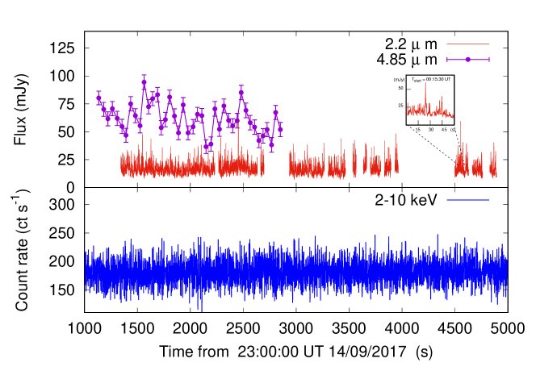
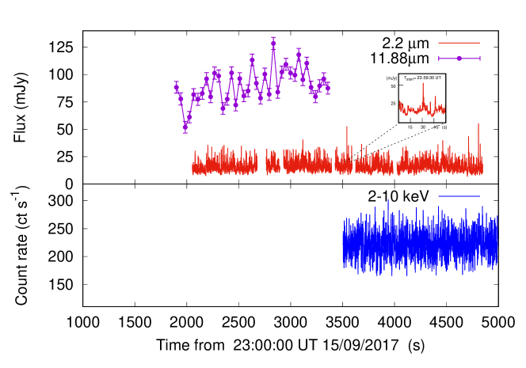
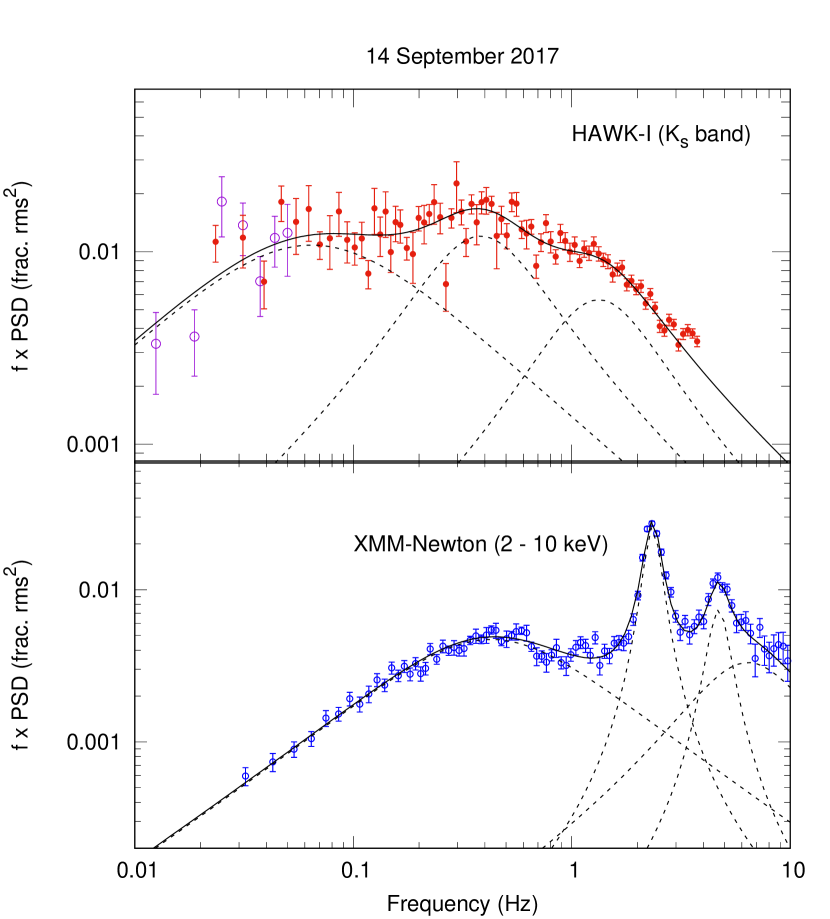
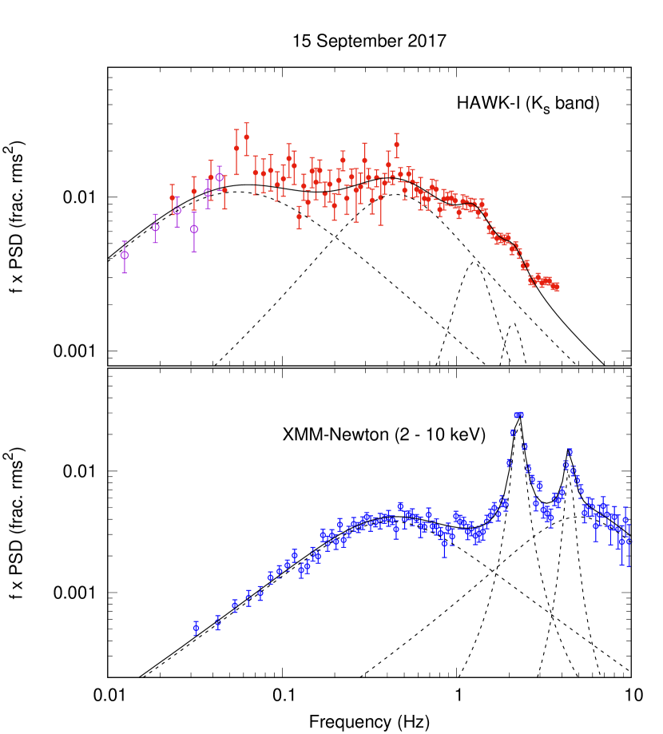
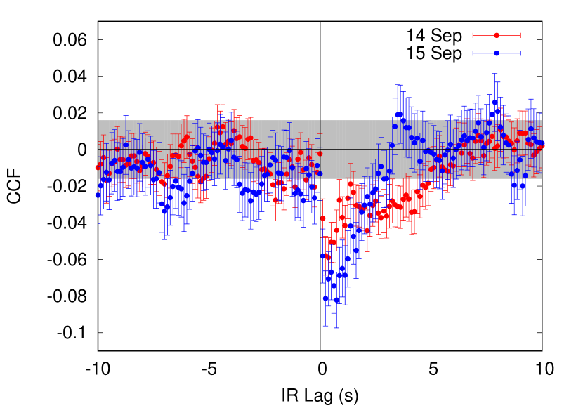
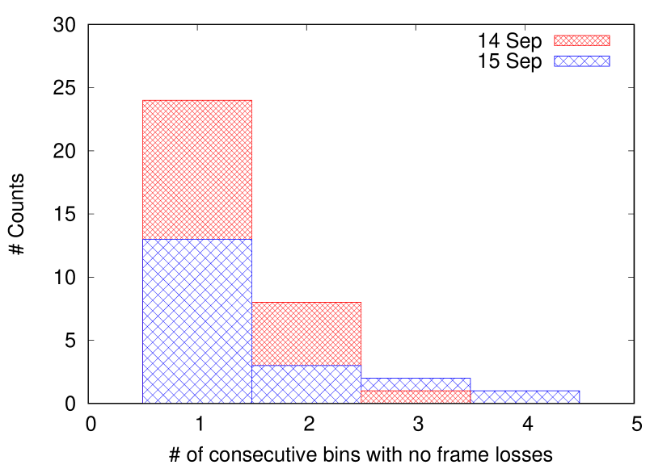
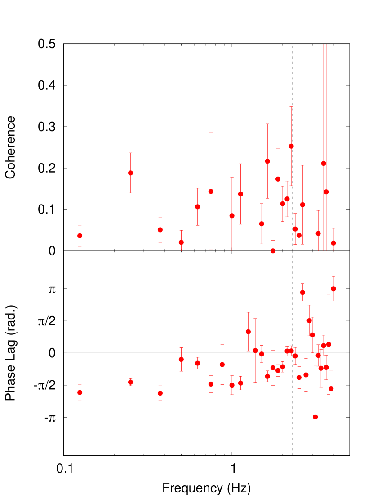
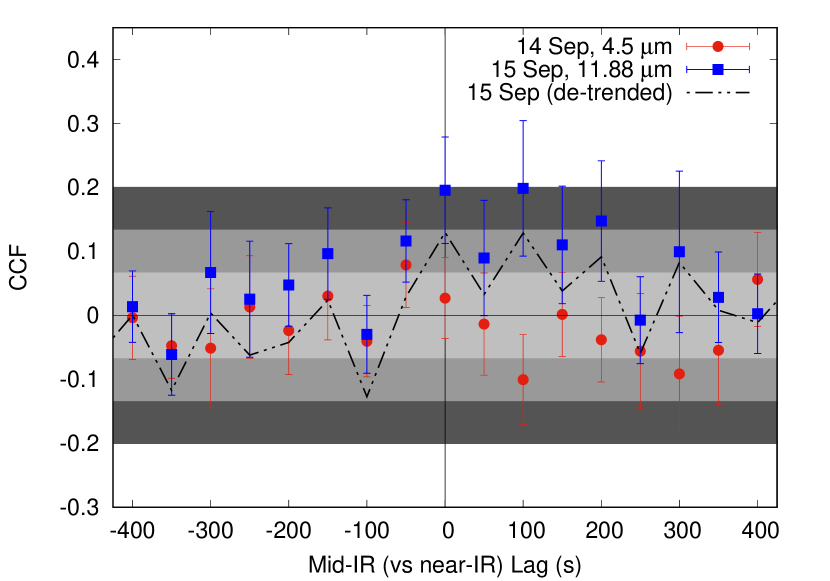
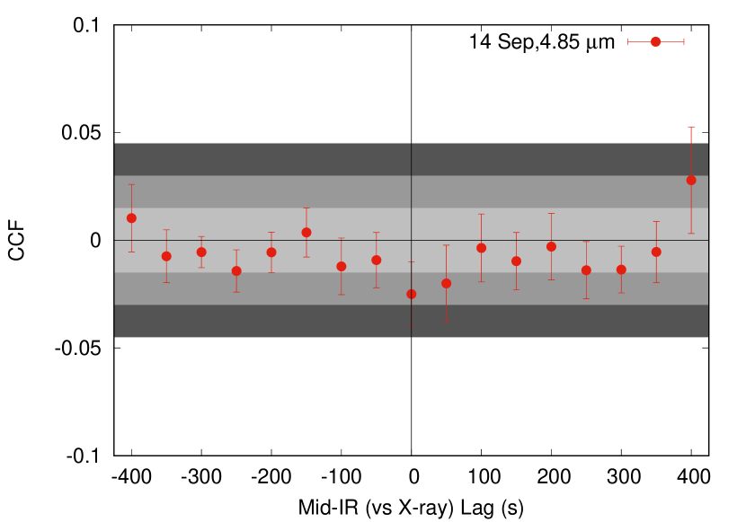
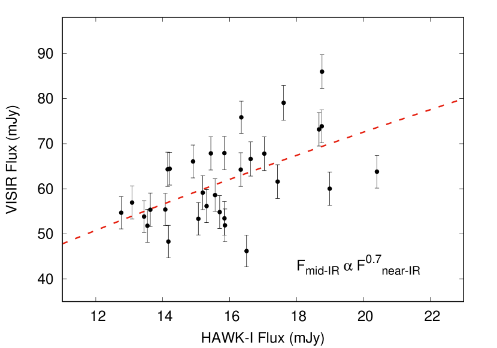

تغير سريع في الأشعة تحت الحمراء من مرشح الثقب الأسود MAXI J1535571 وقيود محكمة على النمذجة
الملخص
نعرض النتائج المتعلقة بتحليل التغير السريع في الأشعة السينية/الأشعة تحت الحمراء (IR) للنظام العابر ذي الثقب الأسود MAXI J1535571. تتألف البيانات المدروسة في هذا العمل من رصدين متزامنين تماماً أُجريا باستخدام XMM-Newton (الأشعة السينية: 0.710 keV)، وVLT/HAWK-I (نطاق ، 2.2 m)، وVLT/VISIR (النطاقان و _، عند 4.85 و11.88 m على التوالي). تُظهر دالة الارتباط المتبادل بين منحنيي الضوء في الأشعة السينية والأشعة تحت الحمراء القريبة هبوطاً قوياً وغير متناظر مضاداً للارتباط عند تأخرات موجبة. نرصد QPO في الأشعة تحت الحمراء القريبة (2.5 ) عند Hz بالتزامن مع QPO في الأشعة السينية عند تردد يقارب التردد نفسه (). ومن التحليل الطيفي المتقاطع قيس تأخر متسق مع الصفر بين الاهتزازين. نقيس أيضاً ارتباطاً معنوياً بين متوسطات التدفقات في الأشعة تحت الحمراء القريبة والمتوسطة خلال الليلة الثانية، لكننا لا نجد ارتباطاً على المقاييس الزمنية القصيرة. نناقش هذه النتائج في إطار السيناريوهين الرئيسيين للتغير السريع في IR (التدفق الداخلي الساخن والنفاث المدفوع بالصدمات الداخلية). في كلتا الحالتين، تشير نمذجتنا الأولية إلى وجود عدم محاذاة بين القرص والنفاث.
keywords:
الكلمة المفتاحية1 – الكلمة المفتاحية2 – الكلمة المفتاحية31 مقدمة
دُرست الثنائيات السينية منخفضة الكتلة ذات الثقوب السوداء (BH LMXB) تاريخياً بصورة رئيسية في الأشعة السينية، حيث تُشع، بحسب نظام التراكم، نسبة كبيرة من الطاقة الثقالية المتبددة إما عبر قرص تراكم رقيق هندسياً وسميك بصرياً (Shakura and Sunyaev, 1973) أو عبر تدفق داخلي سميك هندسياً ورقيق بصرياً (Esin et al., 1997; Poutanen et al., 1997). غير أن الدراسات متعددة الأطوال الموجية أظهرت أن انبعاثاً ساطعاً (غير حراري) يوجد أيضاً عند ترددات أدنى (من البصري-فوق البنفسجي حتى الراديو) (انظر مثلاً: Fender et al., 2001; Corbel and Fender, 2002; Hynes et al., 2003; Gandhi et al., 2011). ويُفسَّر هذا الانبعاث منخفض الطاقة عادةً في إطار إشعاع السنكروترون الصادر إما عن تدفق داخلي ساخن ممغنط سميك هندسياً ورقيق بصرياً، أو عن نفاث مدمج وموازى (Veledina et al., 2013b; Malzac et al., 2004; Malzac, 2014).
خلال السنوات 20 الأخيرة، حسّنت دراسة الانبعاث المتغير البصري-تحت الأحمر (O-IR) على مقاييس دون الثانية فهمنا لهذه الأنظمة بدرجة ملحوظة. كشفت أولى الرصدات دون الثانية في النطاق البصري عن ظواهرية معقدة (Kanbach et al., 2001; Malzac et al., 2003, 2004; Hynes et al., 2003). وعلى وجه الخصوص، أظهرت أول دالة ارتباط متبادل (CCF) لـ XTE J118+40 ارتباطاً مضاداً مثيراً للاهتمام عند تأخر سالب (يقابل تأخر الأشعة السينية)، ويُعرف أيضاً باسم “هبوط الاستبصار”. ثم أُكدت هذه الظاهرة برصدات بصرية/سينية لـ Swift J1753.50127 (Durant et al., 2008). وأظهرت رصدات متعددة الحقب للمصدر الأخير دليلاً على تطور الارتباط، من الاستجابة الموجبة ذات 1-2 ثانية عند ذروة الاندلاع إلى بنية هبوط الاستبصار في الذيل (Hynes et al., 2009; Veledina et al., 2017). وبسبب الانبعاث الراديوي الضعيف لهذا الجرم (Soleri et al., 2010; Tomsick et al., 2015)، نُسب السلوك الموصوف إلى التدفق الداخلي الساخن. وعلى وجه الخصوص، أظهرت نمذجة مفصلة لهذا المصدر أن CCF المرصودة يمكن إعادة إنتاجها بافتراض أن الانبعاث البصري ينشأ من كل من الإشعاع المعاد معالجته وإشعاع السنكروترون الآتي من تدفق داخلي ساخن ممغنط، في حين تتولد الأشعة السينية من كومتنة إشعاع السنكروترون (Veledina et al., 2011).
أدت رصدات فوتومترية سريعة إضافية في O-IR إلى اكتشاف تأخر في O-IR مقداره 0.1 ثانية بالنسبة إلى تغير الأشعة السينية (Gandhi et al., 2008; Casella et al., 2010). نُسب هذا السلوك إلى النفاث، وأُعيد إنتاجه جيداً بما يسمى “نموذج الصدمات الداخلية" (Kobayashi et al., 1997; Spada et al., 2001; Jamil et al., 2010) عند ربط سرعات القذائف بالتغيرات المرصودة في الأشعة السينية (Malzac, 2013, 2014). وقد برهن ذلك أن التقلبات القادمة من التدفق الداخلي يمكن أيضاً أن تنتقل إلى التدفق الخارج، وفتح إمكانية فرض قيود جديدة على معاملات النفاث (Casella et al., 2010; Kalamkar et al., 2016; Gandhi et al., 2017; Vincentelli et al., 2019). كما أتاحت رصدات متعددة الأطوال الموجية لاحقة توصيف تغير O-IR بعمق ودراسة العمليات الفيزيائية التي تحدث داخل هذا التدفق الخارج. فعلى سبيل المثال، توجد الآن أدلة متزايدة على أن منطقة النفاث الباعثة في O-IR ممتدة وربما متطبقة (Vincentelli et al., 2018; Vincentelli and Casella, 2019; Paice et al., 2019)؛ إضافة إلى ذلك، أظهر Malzac et al. (2018) حديثاً أن تعديل التعزيز الدوبلري يمكنه أيضاً أن يؤدي إلى ارتباط مضاد مع الأشعة السينية على المقاييس الزمنية الطويلة.
ومن السمات المهمة الأخرى التي قدمت فهماً جديداً لهندسة هذه الأنظمة الاهتزازات شبه الدورية (QPO). هذه الاهتزازات شائعة جداً في الأشعة السينية، وقد نُسبت إلى مبادرة Lense-Thirring للتدفق الداخلي الساخن (Stella and Vietri, 1998; Ingram and Done, 2012; Motta et al., 2015)، على الرغم من أن هذا التفسير لا يزال محل نقاش إلى حد ما (Ingram and Motta, 2020; Marcel et al., 2020; Marcel and Neilsen, 2020; Ma et al., 2020). وعند الطاقات الأدنى، فُسرت QPOs مشابهة ومتزامنة في النطاق البصري على أنها إشعاع سنكروترون صادر عن تدفق داخلي ممغنط مبادر (Veledina et al., 2013a, 2015). وفي GX 3394، وُجد أن أول QPO رُصد في نطاق IR (Kalamkar et al., 2016) يقع في علاقة توافقية مع QPO في الأشعة السينية، على نحو مشابه لنظيره البصري الذي وُجد قبل ذلك ببعض السنوات (Motch et al., 1983). يمكن لكل من التدفق الداخلي الساخن المبادر، والتدفق الداخلي مع النفاث، أن يفسرا هذا السلوك نوعياً، غير أن الاتفاق الكمي لم يثبت حتى الآن إلا للخيار الأخير، باستخدام نموذج الصدمات الداخلية (Malzac et al., 2018).
MAXI J1535571 مصدر عابر في الأشعة السينية اكتشفته كاميرا Monitor of All-sky X-ray Image Gas Slit Camera على متن محطة الفضاء الدولية (Matsuoka et al., 2009)، كما اكتشفه Burst Alert Telescope على متن Neil Gehrels Swift Observatory في سبتمبر 2017 (Negoro et al., 2017; Kennea et al., 2017). ومن الرصدات الأولى لوحظ أن المصدر يُظهر تغيراً قوياً في الأشعة السينية، يتضمن QPOs منخفضة التردد (Mereminskiy and Grebenev, 2017; Gendreau et al., 2017)، وانبعاثاً راديوياً ساطعاً جداً ذا طيف راديوي مسطح (Russell et al., 2017). كما رُصد انبعاث قوي في IR (Dinçer, 2017). وأدى ذلك إلى تحديد المصدر بوصفه BH LMXB. وخلال الاندلاع، وعلى الرغم من تعرضه لامتصاص شديد (كثافة العمود المحايد cm-2)، بلغ المصدر مستويات تدفق عالية للغاية، حتى 5 Crab في نطاق 220 keV (Shidatsu et al., 2017).
نُسقت بسرعة حملة مكثفة متعددة الأطوال الموجية لتتبع تطور المصدر (Sivakoff, 2017). وبسبب موضعه في السماء، لم يكن بالإمكان إجراء سوى رصدات قليلة باستخدام التلسكوبات الكبيرة جداً (VLTs) قبل أن يصبح المصدر منخفضاً جداً فوق الأفق. في هذه الورقة نعرض نتائج رصدين متزامنين تماماً في الأشعة تحت الحمراء القريبة والأشعة السينية، هدفهما دراسة التغير السريع متعدد الأطوال الموجية لهذا المصدر. ونستكمل الدراسة باستخدام رصدات متزامنة تماماً في الأشعة تحت الحمراء المتوسطة للمرة الأولى أيضاً. نجد أن خصائص التغير السريع في الأشعة تحت الحمراء القريبة تفرض قيوداً محكمة على نماذج النفاث وتدفق التراكم الحالية.
2 الرصدات
أُخذت رصدات متزامنة تماماً ومتعددة الأطوال الموجية خلال ليلتي 14 و15 من سبتمبر 2017 (MJD 58010–58011)، حين كان المصدر في حالته الصلبة-المتوسطة (Baglio et al., 2018; Bhargava et al., 2019; Russell et al., 2019). جُمعت بيانات الأشعة تحت الحمراء القريبة والمتوسطة باستخدام HAWK-I ومصور ومطياف VLT للأشعة تحت الحمراء المتوسطة (VISIR)، على التوالي، وكلاهما مركب على VLTs التابعة لـ ESO؛ وجُمعت بيانات الأشعة السينية بكاميرا EPIC-pn على متن القمر الصناعي التابع لـ ESA XMM-Newton (انظر الشكل 1).ترد حقب الرصدات في الجدول 1.
| Night of the Start Time | Telescope / Instrument | Energy Band | Start Time (UT) | End Time (UT) |
|---|---|---|---|---|
| XMM-Newton/Epic-PN | 0.510 keV | 16:47:04 | 01:08:44 | |
| 14/09 | UT-4/HAWK-I | (2.2 m) | 23:26:21 | 00:21:08 |
| UT-3/VISIR | (4.85 m) | 23:19:22 | 23:46:20 | |
| XMM-Newton/Epic-PN | 0.510 keV | 23:59:09 | 04:20:02 | |
| 15/09 | UT-4/HAWK-I | (2.2 m) | 23:34:15 | 00:19:25 |
| UT-3/VISIR | _ (11.88 m) | 23:29:54 | 23:53:26 |


2.1 بيانات الأشعة السينية. XMM-Newton
جُمعت بيانات الأشعة السينية باستخدام كاميرا EPIC-pn. أُخذت الرصدات في وضع الاندفاع (OBS ID: 0795712001 و0795712101). ونُفذ اختزال البيانات باستخدام نظام XMM Science Analysis System (SAS v15). وعلى وجه الخصوص، استُخرجت عدّات المصدر في المجال RAWX: 2848 (الموافق لحجم زاوي قدره 86 arcsec على امتداد RAWX). وبسبب الامتصاص العالي للمصدر، استُخرجت أحداث الأشعة السينية فقط بين 2 و10 keV. ووُجد أن معدل العد المتوسط للرصدين متشابه جداً: cts s-1 في الليلة الأولى، و cts s-1 في الثانية. ثم صُححت البيانات إلى مركز الكتلة باستخدام برمجية barycen وجُمعت في منحنى ضوئي باستبانة 5.7 ms.
2.2 بيانات الأشعة تحت الحمراء القريبة. VLT/HAWK-I
جُمعت بيانات دون الثانية في الأشعة تحت الحمراء القريبة باستخدام HAWK-I (Pirard et al., 2004) المركب على VLT UT-4/Yepun ضمن البرنامج: 099.D-0068(A). أُخذت رصدات بطول 1 ساعة في النطاق (بطول موجي فعال 2.2 m) باستبانة زمنية 0.125 s. رُصّت الصور في “مكعبات بيانات” مؤلفة من 250 إطاراً، يفصل بينها فراغ مقداره 3 s. تأثر جزء من المكعبات بفقدان إطارات. ولذلك استُبعدت المكعبات ذات فقدان الإطارات في تحليل الارتباط المتبادل لتجنب إدخال تأخرات زائفة. أثناء الرصد، ولا سيما في الجزء الثاني من الليلة الأولى، انتهى الهدف على بعد بضع بكسلات من حافة الكاشف، مما أدخل سمات زائفة في منحنى الضوء. وتحفظاً، قررنا عدم تضمين تلك المكعبات في التحليل (ومن ثم تظهر الفجوات الكبيرة في الشكل 1).
وُجّه التلسكوب إلى 15:35:41.6، 57:11:22.9 (RA, DEC) بزاوية 70°، وذلك لوضع الهدف في الربع السفلي الأيسر (Q1) مع النجم المرجعي ذي قدر مقداره 11.550.02. أُجري اختزال البيانات باستخدام أدوات برمجيات اختزال بيانات ULTRACAM (Dhillon et al., 2007). استُمدت معاملات الاختزال من موضع النجم المرجعي الساطع ودالة انتشار النقطة الخاصة به. ولأخذ تغيرات الرؤية الجوية والنفاذية في الحسبان، استُخدمت النسبة بين معدل عد المصدر والنجم المرجعي الساطع. أظهرت كثافات القدرة الطيفية (PSDs) الفردية للنجم المرجعي غير المتغير ونجم المقارنة أن التغير المستحث بالرؤية الجوية منخفض جداً مقارنة بالتغير الذاتي للهدف، وأُزيل بنجاح بأخذ النسبة بين الهدف والنجم المرجعي الساطع. وباستخدام هذا الاستخراج، وجدنا قدراً متوسطاً في مقداره 11.520.01 (تدفق غير مصحح من الاحمرار قدره 16 mJy) لكلتا الليلتين. وهذا يتفق جيداً مع بيانات الأشعة تحت الحمراء القريبة في Baglio et al. (2018) المأخوذة في الليلتين نفسيهما بواسطة REM. ثم وُضع زمن كل إطار في نظام الزمن الديناميكي لمركز الكتلة.
2.3 بيانات الأشعة تحت الحمراء المتوسطة. VLT/VISIR
حُصل على رصدات الأشعة تحت الحمراء المتوسطة باستخدام VISIR (Lagage et al., 2004) المركب على VLT-UT3 Melipal ضمن البرنامج 099.D-0884(A). ضُبطت الأداة في نمط التصوير ذي المجال الصغير، بمقياس بكسل 45، واستُخدم المرشحان و_ في 14 و15 سبتمبر، على التوالي (ويغطيان مجال الطول الموجي m؛ انظر الجدول 1). تألف كل رصد من 1000s من الزمن على المصدر، وتميز بـ 44 دورات إيماء. وإجمالاً، مع احتساب التقطيع والإيماء بين السماء والمصدر، كان زمن التعريض الكلي 1800–1900 s لكل رصد.
أُجري اختزال البيانات باستخدام خط أنابيب VISIR، المتاح في 11 1 https://www.eso.org/sci/software/gasgano.html. وقُدرت الحساسيات بفضل رصد نجمين قياسيين (HD161096 وHD163376) في الليلة نفسها وبتكوين التلسكوب نفسه. وبعد إعادة تجميع الصور الخام لدورة chop/nod، أُجري قياس ضوئي فتحي باستخدام فتحة كبيرة بما يكفي لتجنب أن تؤثر تغيرات الرؤية الجوية المحتملة في الجزء من التدفق الواقع داخل الفتحة. نلاحظ أن هدف الرصدات كان ساطعاً بما يكفي للسماح بالكشف في الرصدات الفردية. يتطلب خط أنابيب VISIR أن تُدمج الرصدات في مجموعات من مضاعفات اثنين. ومن أجل الحصول على تدفق من كل رصد في هذا العمل، اضطررنا لذلك إلى دمج كل صورة مع الرصد الأول في كل ليلة، ثم أخذ تدفق هذا الرصد الأول في الحسبان للحصول على منحنى الضوء. وباستخدام هذه الطريقة تمكنا من أخذ عينات البيانات بسرعة مضاعفة مقارنةً بـ Baglio et al. (2018). وعلى وجه الخصوص، يمتلك كل صندوق زمني تعريضاً قدره 27.8 s، مع فجوة متغيرة قدرها 10 ثوانٍ بين الصناديق بسبب دورة chop/nod والقراءة. وفي هذه الحالة أيضاً، وُضع منحنى الضوء الناتج بعد ذلك في نظام الزمن الديناميكي لمركز الكتلة.
لم يُكشف أي تغير واضح في الخلفية خلال رصدات VISIR بأكملها (انظر أيضاً Baglio et al. 2018 للتفاصيل). وفي المقابل، رُصد تغير مقداره في عامل تحويل ADU/التدفق عبر تواريخ مختلفة. غير أن هذا التغير قد تسببه أحوال الطقس والسماء المختلفة في تواريخ مختلفة، وكذلك كتل هوائية مختلفة. لذلك يمكن اعتبار أي تغير محتمل في الأشعة تحت الحمراء المتوسطة لـ MAXI J1535571 تغيراً ذاتياً للمصدر بأمان.
3 تحليل البيانات
3.1 كثافات القدرة الطيفية للأشعة السينية والأشعة تحت الحمراء القريبة
دُرست خصائص التغير في الأشعة السينية والأشعة تحت الحمراء القريبة من خلال تحليل القدرة الطيفية بفورييه. قُسمت منحنيات الضوء في الأشعة السينية والأشعة تحت الحمراء القريبة إلى مقاطع بطول 16384 صندوقاً و512 صندوقاً، على التوالي. حسبنا كثافة القدرة الطيفية (PSD) لكل مقطع بتطبيع مربع الجذر المتوسط التربيعي (rms) (انظر مثلاً Belloni and Hasinger, 1990; Miyamoto et al., 1991; Vaughan et al., 2003) ثم طبقنا عامل تجميع لوغاريتمي قدره 1.05 على المتوسط الناتج. مُلئت الفجوات بين المكعبات في بيانات الأشعة تحت الحمراء القريبة ببيانات محاكاة، باتباع الإجراء الموصوف في Kalamkar et al. (2016). وفي حالة الأشعة تحت الحمراء القريبة، ومن أجل الوصول إلى ترددات أدنى من دون التأثير في إحصاءات الترددات الأعلى، حسبنا أيضاً PSD بمنحنى ضوئي أُعيد تجميعه إلى 10 s (أطول بكثير من فجوات 3 s) باستخدام 16 صندوقاً لكل مقطع.


| Date | Band | Comp. | A | rms | Q | d.o.f. | ||
|---|---|---|---|---|---|---|---|---|
| (Hz) | (Hz) | ( Hz) | ||||||
|
14/09 |
X-rays | 1 | 0.12 0.02 | 0.82 0.02 | 13 1 | 0.356 0.001 | 0.14 0.02 | 140/102 |
| 2 | 2.33 0.01 | 0.46 0.02 | 7.9 0.3 | 0.089 0.004 | 2.8 0.07 | |||
| 3 | 4.66 0.05 | 1.2 0.3 | 3 1 | 0.05 0.01 | 4 1 | |||
| 4 | 5 1 | 9 1 | 5 2 | 0.07 0.02 | 0.6 0.1 | |||
|
15/09 |
X-rays | 1 | 0.15 0.03 | 0.78 0.06 | 10 1 | 0.08 0.01 | 0.19 0.04 | 101/102 |
| 2 | 2.25 0.05 | 0.31 0.02 | 6.4 0.3 | 0.08 0.01 | 7.3 0.5 | |||
| 3 | 4.4 0.03 | 0.5 0.1 | 1.8 0.2 | 0.05 0.01 | 9 2 | |||
| 4 | 3 1 | 9 2 | 9 2 | 0.08 0.02 | 0.3 0.1 | |||
|
14/09 |
near-IR | 1 | 0 (fixed) | 0.13 0.02 | 3.4 3 | 0.13 0.02 | - | 83/80 |
| 2 | 0.3 0.04 | 0.51 0.08 | 22 5 | 0.14 0.03 | 2.2 0.1 | |||
| 3 | 1.1 0.2 | 1.6 0.2 | 9 2 | 0.08 0.02 | 0.7 0.2 | |||
|
15/09 |
near-IR | 1 | 0 (fixed) | 0.11 0.01 | 34 3 | 0.13 0.02 | - | 86/79 |
| 2 | 0.28 0.076 | 0.69 0.12 | 22 4 | 0.29 0.02 | 0.4 0.1 | |||
| 3 | 1.2 0.1 | 0.6 0.2 | 3 1 | 0.05 0.01 | 1.5 0.6 | |||
| 4 | 2.07 0.09 | 0.77 0.25 | 0.8 0.3 | 0.03 0.01 | 3 1 |
يبين الشكل 2 كثافات القدرة الطيفية لكلتا الحقبتين في الأشعة السينية وفي الأشعة تحت الحمراء القريبة. لا يتغير PSD للأشعة السينية تغيراً معنوياً بين الليلتين. ومن أجل تكميم التغير الكلي، أُجريت ملاءمة بعدة مكونات لورنتزية (Belloni et al., 2002). يبين الشكل 2 (اللوحات السفلية) كيف يمكن ملاءمة الضجيج عريض النطاق جيداً بمكونين لورنتزيين متمركزين عند 0.5 Hz و5 Hz، على التوالي، في حين يُكشف بوضوح QPO من النوع C (Casella et al., 2005; Motta et al., 2015) وتوافقه الثاني عند 2.25 Hz و4.5 Hz. وتتسق هذه القيم مع القيم المقيسة من رصدات توقيت سينية شبه متزامنة بواسطة Astrosat (Bhargava et al., 2019; Sreehari et al., 2019). ترد نتائج الملاءمة في الجدول 2.
تُظهر PSDs في الأشعة تحت الحمراء القريبة اختلافات واضحة عن الأشعة السينية: يبدو أن التغير منخفض التردد يهيمن على PSDs في IR، مع كسر واضح حول 1 Hz، في حين تهيمن على PSDs الأشعة السينية تغيرات في مجال التردد 0.110 Hz. وعلى غرار الأشعة السينية، نمذجنا PSDs للأشعة تحت الحمراء القريبة بعدد من المكونات اللورنتزية. ويُظهر الضجيج عريض النطاق، الذي يمتد في هذه الحالة حتى تردد نايكويست، فائضاً عند أعلى الترددات، مما يشير إلى وجود تعرج. لذلك أُجريت الملاءمة مع استبعاد الترددات فوق 3 Hz. في الليلة الأولى وُصف الضجيج عريض النطاق جيداً بـ 3 مكونات، متمركزة عند 0 Hz (مثبت)، و0.3 Hz، و1 Hz، ويحدد الأخير الكسر المرئي في PSD. في الليلة الثانية، بقيت الترددات المركزية للمكونات الثلاثة كما هي، رغم أن المكون عالي التردد أصبح أضيق بدرجة ملحوظة، كما تطلبت الملاءمة مكوناً رابعاً إضافياً، أضيق حتى، على نحو هامشي (عند مستوى 2.5). ويتسق التردد المركزي لهذا المكون الإضافي مع تردد QPO المكتشف في منحنى ضوء الأشعة السينية المتزامن. وللتحقق من هذه الفرضية ثبتنا تردد هذا المكون وعرضه على القيم المقيسة في الأشعة السينية، تاركين التطبيع فقط معاملاً حراً. ووُجدت سعة QPO في هذه الحالة ذات دلالة عند مستوى 3 ، مما يعزز الدليل على وجود QPO في نطاق الأشعة تحت الحمراء.
3.2 تحليل الارتباط المتبادل بين الأشعة السينية والأشعة تحت الحمراء القريبة
دُرس التغير المترابط بين منحنيي الضوء في الأشعة السينية والأشعة تحت الحمراء القريبة باستخدام تقنيات في مجالي الزمن والتردد معاً. ومن أجل عدم تشويه النتائج، استخدمنا منحنيات الضوء الأصلية فقط (أي من دون ملء فجوات الأشعة تحت الحمراء القريبة)، مع استبعاد المكعبات المتأثرة بفقدان الإطارات. حسبنا CCF (Edelson and Krolik, 1988) لكل الرصدات المتزامنة باستخدام الإجراء الموصوف في Gandhi et al. (2010). وتُظهر CCFs المحسوبة في الليلتين هبوطاً قوياً غير متناظر عند تأخرات موجبة (التأخرات الموجبة تعني أن الأشعة تحت الحمراء القريبة تتأخر عن الأشعة السينية)، مع هبوط حاد قدره 1 ثانية وارتفاع ألطف قدره 5 ثانية (الشكل 3).
كمّمنا مساهمة الضجيج المحتملة في CCF المرصودة بمحاكاة أزواج من منحنيات ضوئية غير مترابطة ذات خصائص قدرة طيفية مماثلة لمجموعة بياناتنا. وللتوزيع الناتج لـ من CCFs غير المترابطة انحراف معياري قدره 0.016 (المنطقة المظللة بالرمادي في الشكل 3). ويبدو هبوط الارتباط المضاد ذا دلالة إحصائية، في حين تتسق القمم المرصودة عند تأخرات أكبر من 5 s – وكذلك تلك عند التأخرات السالبة – مع الضجيج.


ولفحص هذا التغير المترابط بمزيد من التفصيل، طُبق التحليل الطيفي المتقاطع بفورييه. وعلى وجه الخصوص، حُسب الاتساق الذاتي والتأخرات باستخدام الإجراء الموصوف في Uttley et al. (2014) (انظر أيضاً Vaughan and Nowak, 1997; Ingram, 2019, والمراجع الواردة فيه). أجبرنا وجود فقدان الإطارات على استبعاد جزء كبير من مكعبات البيانات في تحليل الارتباط المتبادل. وقد عرض منحنى الضوء “المنظف” المتبقي مقاطع كثيرة متقطعة، مع فجوات أطول بكثير من تلك المرئية بين مكعبي بيانات متتاليين (انظر الشكل 4). ومن أجل حساب كثافات الطيف المتقاطع، استخدمنا مقاطع بطول 64 صندوقاً، مما أتاح لنا استكشاف ترددات حتى 0.125 Hz. ولاستقصاء مقاييس زمنية أطول، ينبغي إما التعامل مع إحصاءات أدنى بكثير (بسبب انخفاض عدد الفواصل الطويلة بما يكفي) أو ملء الفجوات بين الفواصل. وفي الحالة الأخيرة، حتى إن أمكن أن تكون الإحصاءات الناتجة عالية شكلياً، فإن الأطياف المتقاطعة الناتجة ستبدو مشوهة بدرجة كبيرة، كما تؤكد المحاكاة. ومع ذلك، وبالنظر إلى عرض الهبوط في CCF، لا تزال الترددات في مجال Hz متوقعة الإسهام في الارتباط المضاد المرصود. لذلك فإن اختيارنا مناسب لغرضنا. وبسبب الإحصاءات المنخفضة، وبالنظر إلى الخصائص الزمنية المتشابهة خلال الرصدين، أُجري التحليل الطيفي المتقاطع بدمج بيانات الليلتين معاً. كما فحصنا بيانات الليلتين كلٌّ على حدة، لكن لم يُعثر على تغير معنوي عن النتائج الموصوفة. وتُعرض النتائج في الشكل 5.

إن الاتساق الذاتي لمجموعتي البيانات منخفض جداً في معظم الترددات المفحوصة تقريباً. ومع ذلك تبدو تأخرات الطور، رغم تشتتها، وكأنها تُظهر اتجاهاً واضحاً. فعند الترددات المنخفضة يوجد دليل على تأخر طور ثابت (تقريباً) عند ، في حين تكون تأخرات الطور غير مقيدة عند ترددات أعلى من QPO، ولذلك تتذبذب بين و. ويُقاس اتساق أعلى نوعاً ما مقداره (خطأ 1) على مجال التردد حيث يُكشف QPO في منحنى ضوء الأشعة السينية. وفي هذا المجال نجد أيضاً أن تأخر الطور متسق مع الصفر (/6 rad. حد أعلى 3 ). اختبرنا دلالة هذا التغير بتكامل تأخرات الطور والاتساق ضمن ترددات QPO (2.05-2.3 Hz) وفي صندوق مساوٍ في الاتساع متمركز قبل QPO مباشرة (1.7-2.05 Hz). تنتقل تأخرات الطور من -0.8 0.2 rad. خارج QPO، إلى 0.05 0.1 rad. (1 )؛ أما الاتساق فيزداد من 0.08 0.02 إلى 0.12 0.02 (1 ). وهذا يبين بوضوح وجود مكون مترابط إضافي مرتبط بـ QPOs المرصودة في كل من الأشعة السينية وIR عند 2.1 Hz.
3.3 الارتباطات مع الأشعة تحت الحمراء المتوسطة
سبق أن حُللت خصائص تغير منحنى الضوء في الأشعة تحت الحمراء المتوسطة بواسطة Baglio et al. (2018). خلال الليلة الأولى (4.85 m) أظهر المصدر تدفقاً قدره 62.4 mJy وrms كسرياً قدره 17.2 8.4%؛ وخلال الليلة الثانية (11.88 m) قيس تدفق قدره 90.2 mJy وrms قدره 14.9 4.8 %. نركز هنا على التغير المترابط بين الأشعة تحت الحمراء المتوسطة ومنحنيات الضوء في الأشعة تحت الحمراء القريبة/الأشعة السينية. وبينما أمكن حساب الارتباط مع نطاق الأشعة تحت الحمراء القريبة لكلتا الليلتين، لم تُحصل تغطية سينية/متوسطة تحت حمراء متزامنة تماماً إلا خلال الليلة الأولى.
وعلى غرار حالة الأشعة تحت الحمراء القريبة/الأشعة السينية، حسبنا CCF باستخدام صناديق زمنية قدرها 50 s. وقُدرت الأخطاء باتباع الإجراء الموصوف في Edelson and Krolik (1988) وGandhi et al. (2010). ثم قيّمنا مساهمة الضجيج بتطبيق الطريقة نفسها الموصوفة في القسم 3.2. تُرسم CCFs في الشكل 6، مع ظلال رمادية تمثل مستويات الثقة 1 و2 و3. في الليلة الأولى، لم نجد أي ارتباط معنوي بين الأشعة السينية والأشعة تحت الحمراء المتوسطة، ولا بين منحنيي الضوء في الأشعة تحت الحمراء القريبة والمتوسطة. وتشير معاينة بصرية لمنحنيات الضوء وPSDs إلى أن سبب عدم الكشف هذا هو غياب التغير عند ترددات فورييه أدنى من 0.03 Hz (مقاييس زمنية قدرها 30 s).


تعرض CCF للأشعة تحت الحمراء القريبة/المتوسطة في الليلة الثانية بدلاً من ذلك قمتين عند مستوى عند تأخرين 0 s و100 s (تتأخر الأشعة تحت الحمراء المتوسطة عن القريبة). ومع ذلك، نلاحظ أن منحنى ضوء الأشعة تحت الحمراء المتوسطة خلال الليلة الثانية يُظهر اتجاهاً طويل الأمد متزايداً ببطء، مما قد يؤثر في CCF. لذلك حسبنا CCF بعد إزالة اتجاه خطي من منحنى الضوء (انظر الشكل 6). يكون الارتباط في الحالة الثانية أدنى من 2 (أظهرت المحاكاة أن مستويات الثقة لم تتغير تغيراً معنوياً بعد إزالة الاتجاه). وهذا يبين أن الارتباط المرصود يعود إلى الاتجاه طويل الأمد، ولا ينشأ من التغيرات على المقاييس الزمنية السريعة. ولتصوير ذلك بصورة أفضل، رسمنا أيضاً مخطط ارتباط الأشعة تحت الحمراء المتوسطة مقابل القريبة (الشكل 7)، بعد حساب متوسط قيم HAWK-I ضمن تعريضات VISIR ذات 27.8s. يبلغ معامل ارتباط بيرسون بين السلسلتين =0.56، وهو بحسب توزيع t بسيط ذو دلالة عند مستوى 3 . كما كمّمنا العلاقة بين تغيرات الأشعة تحت الحمراء القريبة والمتوسطة بملاءمتها كقانون قدرة ، ووجدنا ميلاً قدره =0.70.2.

4 مناقشة
4.1 طيف القدرة وQPO
نرصد انبعاثاً شديد التغير في الأشعة تحت الحمراء القريبة من BH LMXB MAXI J1535571 في حالته المتوسطة. يمتد التغير عريض النطاق حتى مقاييس زمنية دون الثانية، وإن كان مع كسر واضح في PSD عند 1 Hz. وقد أُبلغ سابقاً عن سلوك مشابه في عدد قليل من BH LMXBs: (Motch et al., 1983; Casella et al., 2010; Gandhi et al., 2010; Kalamkar et al., 2016; Veledina et al., 2017; Vincentelli et al., 2018). ومركباً فوق الضجيج عريض النطاق القوي، يُكشف بالتزامن QPO عند Hz في كل من الأشعة السينية و(هامشياً) في PSDs للأشعة تحت الحمراء القريبة، ونحدده بوصفه QPO من النوع C. ومن المثير للاهتمام ملاحظة أن عامل Q للـ QPO الرئيسي (السيني) وتوافقه متسقان ضمن الأخطاء. وقد رُصد هذا سابقاً في مصادر أخرى (Rao et al., 2010; Ratti et al., 2012) ويشير إلى أن أصل شبه الدورية يرجع إلى التقلبات في التردد لا في السعة. وقد وُجد أن ذلك متسق مع تنبؤات مبادرة Lense-Thirring لتدفق التراكم (Ingram et al., 2009; Ingram and Done, 2012, لكن انظر أيضاً Marcel and Neilsen, 2020).
أُبلغ حتى الآن عن QPOs من النوع C في O-IR في عدد من BH LMXBs (Motch et al., 1983; Gandhi et al., 2010; Veledina et al., 2015). وعلى وجه الخصوص، أظهر GX 339-4 QPOs في IR في علاقة توافقية مع QPO السيني (Kalamkar et al., 2016)، أو من دون نظير واضح في PDS للأشعة السينية (أي إن QPO السيني مكتشف هامشياً أو غير مكتشف Vincentelli et al., 2019). وعلى الرغم من كونه أضعف مقارنة بـ GX 339-4، (3% مقابل 6%، انظر الجدول 2 والجدول 1 في Kalamkar et al., 2016)، فإن QPO في IR لدينا هو الأسرع المكتشف حتى الآن (بما يقارب عامل عشرة)؛ إضافة إلى ذلك، (وعلى خلاف Malzac et al., 2018) نجد أيضاً تأخر طور صفرياً. ومن المثير للاهتمام أن تأخرات بصرية/سينية متسقة مع 0 عند تردد QPO قد أُبلغ عنها أيضاً من BH LMXB Swift J1753.00127 (Veledina et al., 2015)، مما قد يشير إلى سيناريو فيزيائي مشابه.
لا يزال أصل الانبعاث السريع المتغير المشابه في O-IR محل نقاش (Uttley and Casella, 2014; Poutanen, Veledina, and Revnivtsev, 2014). ويستدعي السيناريوهان الواعدان أكثر إشعاع سنكروترون إما من تدفق تراكم ساخن ممغنط (Veledina et al., 2013b)، أو من نفاث موازى (Malzac, 2014). وباستخدام النتائج المحصلة للـ QPOs المتزامنة في الأشعة تحت الحمراء القريبة والأشعة السينية، يمكننا فرض قيود على كلا النموذجين.
في سيناريو التدفق الساخن، ترتبط QPOs في O-IR بمبادرة الجسم الصلب Lense-Thirring (LT) للوسط الساخن (Veledina et al., 2013a). اختُبر هذا النموذج أساساً باستخدام QPOs عند ترددات أدنى بكثير (- Hz؛ Veledina et al., 2017)، غير أنه ما دام الاهتزاز مكتشفاً أيضاً في الأشعة السينية، فلا توجد قيود مبدئية على تردد QPO. إذا افترضنا أن التردد المرصود في الأشعة تحت الحمراء القريبة Hz هو التردد الذي ينقطع عنده طيف السنكروترون (باتجاه أطوال موجية أطول، وهو ما يسمى تردد الانعطاف، Wardziński and Zdziarski 2001، انظر أيضاً المعادلة 3 في Veledina et al. 2013b)، فمن الممكن وضع حد لحجم منطقة إصدار السنكروترون الممتصة جزئياً. وللتوافق مع التردد المطلوب في الأشعة تحت الحمراء القريبة، نحصل على قيود على العمق البصري لتومسون للإلكترونات () لإلكترونات قانون القدرة في التدفق الساخن ، وعلى المجال المغناطيسي في الوسط G، ويمكن تحقيق ذلك عند (لكتلة ثقب أسود مقدارها 10 كتل شمسية). وينبغي مقارنة هذا التقدير بنصف القطر الخارجي لتدفق التراكم المبادر، كما يُستنتج من تردد فورييه للـ QPO، أي Hz. وباستخدام المعادلة (43) في Fragile et al. (2007) لتردد QPO واستبدال تقدير نصف قطر القرص الداخلي من Lubow et al. (2002) (انظر أيضاً المعادلة 2 Ingram et al., 2009)، نجد أن أنصاف الأقطار المطلوبة يمكن تحقيقها من أجل معامل دوران ، واعتماد قانون قدرة شعاعي لكثافة سطح القرص (نموذجي لتدفقات التراكم المسيطر عليها بالحمل، Narayan and Yi 1994) و. وعليه، فمن أجل تفسير QPO المتزامن في الأشعة تحت الحمراء القريبة والأشعة السينية ضمن نموذج التدفق الساخن، نحتاج إلى دوران عالٍ ونسبة سماكة قرصية عالية. ويمكن تفسير تأخر الطور الصفري المحصل بين QPO السيني وQPO الأشعة تحت الحمراء القريبة بمبادرة الجسم الصلب للتدفق الساخن، إذا كان الميل المداري ° (Veledina et al., 2013a). ويبدو الدوران العالي والميل المداري العاليين متسقين مع قياسات طيفية سينية حديثة (Miller et al., 2018; Xu et al., 2018; Sreehari et al., 2019).
السيناريو البديل الذي يُستدعى عادةً لـ QPOs في O-IR هو مبادرة LT لنفاث نسبوي مع التدفق الداخلي الساخن الباعث للأشعة السينية. وقد أظهرت محاكاة GRMHD ثلاثية الأبعاد حديثة 3D أن النفاث يمكن أن يتقدّم مع التدفق الداخلي الساخن (Liska et al., 2018). وعلاوة على ذلك، أظهر Malzac et al. (2018) أن سعة وعرض QPO في IR المرصود في GX 3394 خلال حالته الصلبة-المتوسطة في 2010 (Kalamkar et al., 2016) يمكن إعادة إنتاجهما بمبادرة نفاث، بافتراض انكسار جزئي لاتساق اهتزازاته، كما هو متوقع أيضاً أثناء مبادرة LT. فعلى سبيل المثال، إذا كان (حيث هو عامل لورنتز للنفاث و هي سرعة النفاث عديمة الأبعاد) فإن زاوية مبادرة مقدارها ° ستنتج rms المطلوب 3% المرصود في IR.
يفرض تأخر الطور الصفري المرصود قيوداً على المسافة بين موقعي الانبعاث في الأشعة السينية والأشعة تحت الحمراء القريبة. ويمكن استخدام ذلك لتقييد الميل الأقصى للنفاث، ولوضع حد أدنى لسرعته (). وبأخذ تأثيرات الإسقاط في الحسبان، تكون المسافة بين منطقتي الإصدار ، حيث هو جيب تمام زاوية ميل النفاث بالنسبة إلى خط البصر، و هو التأخر الزمني بين الأشعة تحت الحمراء القريبة والأشعة السينية. ومن خلال تكامل الطيف المتقاطع على الترددات حيث يكون تأخر الطور متسقاً مع 0، حصلنا على حد أعلى للتأخر الزمني مقداره 0.04 s.
أظهرت محاكاة نموذج الصدمات الداخلية أن قمة منطقة الانبعاث في الأشعة تحت الحمراء القريبة (R) يمكن أن تمتد، بحسب الشروط الفيزيائية للنفاث، على مجال من القيم من إلى (Malzac, 2014; Malzac et al., 2018). وبالنظر أيضاً إلى الحدود المفروضة على منطقة التسارع الأولى للنفاث من قبل Russell et al. (2020)، اعتمدنا قيمة محافظة لـ R قدرها ، وهو ما يؤدي إلى عامل لورنتز مطلوب للنفاث مقداره 1.7 وميل للنفاث °. ومن المثير للاهتمام ملاحظة أن هذا يتفق جيداً مع الرصدات الراديوية لـ MAXI J1535571 المنفذة قريباً من حملتنا، التي كشفت عن قذف نسبوي بميل مبلغ عنه (Russell et al., 2019). وبما أن القياسات الطيفية السينية تبدو وكأنها تشير إلى قرص عالي الميل (Miller et al., 2018; Xu et al., 2018; Sreehari et al., 2019)، فإن هذا يشير إلى وجود عدم محاذاة بين الدوران المداري ومحور النفاث، وهو ما قد يسبب مبادرة النفاث. وتدعم التغيرات السريعة في اتجاه النفاث على السماء، التي شوهدت حديثاً في V404 Cyg وCir X-1 (انظر مثلاً Coriat et al., 2019; Miller-Jones et al., 2019)، إمكانية مثل هذه المبادرة.
نلاحظ أن مزيجاً من السيناريوهين ممكن أيضاً. فعلى سبيل المثال، قد يشير التغير الأقوى في IR المرصود عند الترددات الأدنى إلى وجود مساهمة معنوية من النفاث (Veledina et al., 2011; Malzac et al., 2018). لذلك، يمكن ببساطة إعادة إنتاج إشارة QPO الضعيفة المقيسة في مجموعة البيانات هذه بافتراض وB أعلى (أي أنصاف أقطار أصغر بكثافة وكثافة طاقة مغناطيسية أعلى)، إذ سيكون نطاق IR واقعاً في نظام الامتصاص الذاتي. غير أن محاكاة مفصلة ضرورية لفصل مساهمة هذين المكونين وفهم الاختلافات المرصودة بصورة أفضل مقارنة بـ GX 339-4.
4.2 تحليل الارتباط المتبادل
يكشف تحليلنا عن صلة واضحة بين نطاقي الأشعة السينية وIR. تعرض CCF ارتباطاً مضاداً غير متناظر ومعنوياً عند تأخرات موجبة، من دون أي دليل على ارتباط موجب. وقد شوهدت سابقاً ارتباطات مضادة بين تغير الأشعة السينية وO-IR في BH LMXBs أخرى. ولعل من أبرز الحالات CCF البصري/السيني لـ Swift J1753.50127، الذي أظهر ارتباطاً مضاداً قوياً عند تأخرات سالبة وارتباطاً موجباً عند تأخرات موجبة (Durant et al., 2008; Veledina et al., 2017). وقد أُعيد إنتاج هذا السلوك بنجاح باستدعاء مزيج من إشعاع سنكروترون ذاتي الكومتنة للتدفق الساخن وإعادة المعالجة من القرص الخارجي (Veledina et al., 2011, 2013b). أما CCF المرصودة في MAXI J1535571 فتُظهر ارتباطاً مضاداً عند تأخرات موجبة ولا تُظهر ارتباطات موجبة معنوية (فوق مستوى الضجيج). كما رُصدت CCF مشابهة تقريباً تُظهر ارتباطاً مضاداً بتأخر موجب قدره 1-2 s (تضمنت مع ذلك أيضاً قمة مترابطة موجبة عند 5 s) في Swift J1753.50127 خلال طور الخفوت من اندلاع 2005 (Hynes et al., 2009; Veledina et al., 2017) وأُعيد إنتاجها بنموذج التدفق الساخن، من خلال استدعاء مصدر ثانٍ لفوتونات الأشعة السينية (انظر الشكل 5 في Veledina et al., 2017). ومن المثير للاهتمام ملاحظة أن Swift J1753.50127، كما في رصداتنا، كان في الحالة الصلبة-المتوسطة عند رصد هذا الارتباط المضاد.
في مجال فورييه، نكشف تأخرات طور سالبة ثابتة تقريباً تحت 1 Hz. وبالنظر إلى الشكل المشابه لـ CCF، فإن تأخرات الطور المتوقعة من نموذج التدفق الداخلي الساخن تتفق جيداً مع هذه النتيجة. غير أننا نلاحظ أن تأخرات طور سالبة مشابهة رُصدت أيضاً في BH LMXB GX 3394 وقد فُسرت بنجاح بنموذج الصدمات الداخلية (Malzac et al., 2018). ووفقاً لهذا السيناريو فإن هذا السلوك يرجع أساساً إلى الاستجابة التفاضلية للصدمات للاضطرابات المدخلة (السينية) 22 2 في نموذج الصدمات الداخلية (Malzac, 2014)، تكون سرعة القذيفة متناسبة مع تقلبات الأشعة السينية. وتحدث الصدمات بسبب الفرق في السرعة بين القذائف، مما يؤدي إلى استجابة تفاضلية.. ومن المعروف أن دالة استجابة نبضية معرفة على أنها مشتقة دالة تعطي تأخر طور قدره (انظر أيضاً Jenkins and Watts, 1969; Malzac et al., 2004). وبحسب الميل وعامل لورنتز للنفاث، يمكن أن يصبح هذا الأثر أكثر أو أقل هيمنة، مغيراً تأخر الطور (انظر الشكلين 13 و14 في Malzac et al., 2018).
وفي هذا السياق دائماً، ليس واضحاً لماذا لا يوجد تأخر الأشعة تحت الحمراء 0.1 s، المرتبط عادة بسيناريو النفاث. فمن المحاكاة المعروضة في Malzac et al. (2018)، يُتوقع التأخر في كل التكوينات المختبرة، ولا ينبغي أن يعتمد على عامل لورنتز للنفاث ولا على الميل. غير أن اعتماد تغير IR على تقلبات الأشعة السينية في سيناريو الصدمات الداخلية لا خطي بدرجة عالية ويصعب التنبؤ به من دون محاكاة مفصلة. من الممكن أن تمنع QPOs المهيمنة على PSD للأشعة السينية عند ترددات أعلى من 2 Hz كشف تأخر 0.1 s. وقد وُجد وضع مماثل سابقاً في GX 3394 (Malzac et al., 2018) حيث اعتُبر أن وجود QPO منخفض التردد يلوث تأخر الطور المتوقع في سيناريو الصدمات الداخلية. وثمة احتمال آخر هو أن تأخر 0.1 s يهيمن على طيف التأخر عند ترددات أعلى من المعتاد رصدها. أظهر Paice et al. (2019) أنه – على الأقل في حالة MAXI J1820+070 – يمكن بالفعل رصد تأخر 0.1 s حتى 5 Hz على الأقل.
4.3 الأشعة تحت الحمراء المتوسطة
نقدم للمرة الأولى تحليلاً للتغير المترابط بين بيانات متزامنة في الأشعة السينية والأشعة تحت الحمراء القريبة والمتوسطة. لم يُكشف ارتباط معنوي خلال الليلة الأولى، في حين وُجد خلال الليلة الثانية ارتباط عند مستوى ، انخفض إلى ما دون 2 بمجرد إزالة الاتجاه طويل الأمد من منحنيات الضوء. ويمكن تفسير مثل هذا السلوك بأن كلاً من PDS في الأشعة السينية والأشعة تحت الحمراء القريبة يُظهر كسراً منخفض التردد عند 0.03 Hz (مقاييس زمنية 30 s). وهذا يعني أنه على المقاييس الزمنية التي يستقصيها رصد الأشعة تحت الحمراء المتوسطة، يُظهر كل من منحنى الأشعة تحت الحمراء القريبة ومنحنى الأشعة السينية قدراً صغيراً من التغير، مما يعيق إمكانية كشف أي ارتباط.
قُدمت مناقشة مفصلة لرصدات الأشعة تحت الحمراء المتوسطة لـ MAXI J1535571 المنفذة خلال حملتنا في Baglio et al. (2018). وقد أبلغ المؤلفون عن تغير معنوي في الأشعة تحت الحمراء المتوسطة على مقاييس زمنية بالدقائق، وهو ما فُسر، بالنظر أيضاً إلى الفائض القوي الظاهر في التوزيع الطاقي الطيفي (SED)، بأنه انبعاث سنكروتروني من نفاث موازى. وتبدو مساهمة التدفق الداخلي الساخن عند هذه الأطوال الموجية غير مرجحة أيضاً عند النظر إلى المعاملات الأولية المحصلة في القسم السابق. أما في نطاق الأشعة تحت الحمراء القريبة، فيخلص المؤلفون أنفسهم إلى احتمال وجود مساهمة من كل من النفاث وقرص التراكم (Baglio et al., 2018; Russell et al., 2020). لذلك نناقش نتائجنا المتعلقة بالصلة بين الأشعة تحت الحمراء المتوسطة/القريبة وفق هذين السيناريوهين المحتملين:
كل من الأشعة تحت الحمراء المتوسطة والقريبة من النفاث: بما أنهما جزء من المكون الفيزيائي نفسه، ينبغي أن يوجد ارتباط وثيق بين النطاقين، مع تأخرات محتملة من رتبة بضع ثوانٍ (Malzac et al., 2018). غير أننا نلاحظ أنه على الرغم من أننا لا نجد ارتباطاً على مقاييس زمنية مقدارها عشرات الثواني، فإن ذلك لا يعارض هذا السيناريو بالضرورة. فكما ذُكر أعلاه، لا يُظهر انبعاث الأشعة السينية ولا الأشعة تحت الحمراء القريبة تغيراً قوياً على مقاييس زمنية قابلة للمقارنة مع استبانة VISIR الزمنية: ومن ثم يكون الارتباط الضعيف متوقعاً إلى حد ما في هذه الحالة. قد تساعد محاكاة مفصلة جديدة تتضمن النهاية منخفضة التردد لـ PSD تقلبات الأشعة السينية في اختبار هذا السيناريو كمياً باستخدام مجموعة البيانات هذه.
النفاث في الأشعة تحت الحمراء المتوسطة، والتدفق الداخلي الساخن في الأشعة تحت الحمراء القريبة: على المقاييس الزمنية القصيرة، يعتمد الارتباط المتوقع بشدة على المعاملات الفيزيائية للنظام، التي يمكن أن تؤثر في استجابات المكونين. وقد يكون شكل CCF معقداً ويصعب التنبؤ به من دون نمذجة ملائمة. ومع ذلك، إذا انتقلت تقلبات معدل تراكم الكتلة المدخلة نفسها عبر التدفق الداخلي الساخن (حيث ينبعث في الأشعة تحت الحمراء القريبة) ثم في النفاث (الباعث في الأشعة تحت الحمراء المتوسطة)، فمن المتوقع أن يظهر تأخر من رتبة ثوانٍ. أما على المقاييس الزمنية الأطول، فينبغي أن يكون النطاقان مترابطين، وفق صلة التدفق الداخلي-الخارجي القوية والمعروفة في هذه المصادر (انظر مثلاً Gallo et al., 2018, والمراجع الواردة فيه).
وبما أن كلا السيناريوهين يمكنه إعادة إنتاج الارتباط المرصود على المقاييس الزمنية الأطول، فإن نمذجة ذاتية الاتساق تشمل كلا المكونين ضرورية لتكميم مساهمة التدفق الداخلي الساخن والنفاث في الأشعة تحت الحمراء القريبة فعلياً. والأهم من ذلك أن السيناريوهين يمتلكان تنبؤات شديدة الاختلاف عند استقصاء مقاييس زمنية (دون) الثانية، وهي مقاييس لم يكن الوصول إليها ممكناً بمجموعة البيانات الحالية. ومن ثم ستوفر رصدات جديدة ذات استبانة زمنية أعلى معلومات فيزيائية حاسمة.
5 الخلاصة
في هذه الورقة نبلغ عن اكتشاف تغير مترابط في الأشعة السينية/الأشعة تحت الحمراء القريبة من BH LMXB MAXI J1535571، دُرس برصدين في ليلتين متتاليتين من سبتمبر 2017. ويمكن تلخيص نتائجنا على النحو الآتي:
-
•
يكشف تحليل القدرة الطيفية عن وجود ضجيج عريض النطاق معقد حتى مقاييس زمنية دون الثانية في كل من نطاقي الأشعة السينية والأشعة تحت الحمراء القريبة. لم تُعثر فروق معنوية في PSDs خلال الليلتين المتتاليتين من حملتنا. وُجد QPO عند Hz في كل من الأشعة السينية والأشعة تحت الحمراء القريبة. ولا تتجاوز دلالة QPO في الأشعة تحت الحمراء القريبة بالقيمة الاسمية 2، لكن حقيقة أن التأخرات المقيسة عند ترددات QPO تمتلك لايقينيات صغيرة نسبياً تبرهن أن QPO موجود في منحنى الضوء في الأشعة تحت الحمراء القريبة. وهذا أول كشف غير ملتبس عن QPO في الأشعة تحت الحمراء القريبة والأشعة السينية عند التردد نفسه. يفرض تردد QPO العالي وتأخر الطور شبه الصفري (مع /6 راديان حد أعلى 3 ) بين النطاقين قيوداً محكمة على النماذج. ونناقش أصل QPOs في الأشعة تحت الحمراء القريبة في إطار سيناريوهين محددين: مبادرة Lense-Thirring لتدفق التراكم الساخن (Veledina et al., 2013a) أو المبادرة المتزامنة للنفاث والتدفق الداخلي (Malzac et al., 2018). ويوفر كلا السيناريوهين قيوداً تبدو أنها تؤكد مؤشرات سابقة على عدم محاذاة بين القرص والنفاث.
-
•
تُظهر دالة الارتباط المتبادل ارتباطاً مضاداً غير متناظر ومحيراً عند تأخرات موجبة. وتقابل هذه السمة تأخرات طور ثابتة تقريباً (تتأخر الأشعة السينية عن الأشعة تحت الحمراء القريبة). رُصد سلوك مشابه في GX 3394 وفُسر في تلك الحالة في سياق نموذج الصدمات الداخلية (Malzac et al., 2018; Vincentelli et al., 2019)، وكذلك خلال الحالة الصلبة-المتوسطة لـ Swift 1753.50127، حيث أعيد إنتاجه بنموذج التدفق الداخلي الساخن المتضمن متصلين سينيين (Veledina et al., 2017).
-
•
أجرينا أول تحليل مترابط للانبعاث المتغير في الأشعة تحت الحمراء المتوسطة (4.85–11.88 m) والأشعة تحت الحمراء القريبة (2.2 m) من BH LMXB. لم يُعثر على ارتباط معنوي خلال الليلة الأولى بسبب غياب التغير في منحنى الضوء للأشعة تحت الحمراء القريبة على المقاييس الزمنية التي يستقصيها رصد VISIR. ولم يُعثر على ارتباط معنوي على المقاييس الزمنية حتى 400 s. أما مخطط ارتباط التدفق-التدفق لليلة الثانية فكشف ارتباطاً عند مستوى 3، يُرجح أنه مرتبط باتجاه طويل الأمد واضح في منحنى ضوء الأشعة تحت الحمراء المتوسطة. ويمكن ربط الاتجاهات باهتزازات على مقاييس زمنية أطول بكثير من المقطع الموافق من منحنى الضوء. وفي حالتنا، ومن الاتجاه المرئي في اللوحة السفلى من الشكل 1، لا يسعنا إلا القول إن للاهتزاز مقياساً زمنياً مميزاً 1000s.
يتبين أن التغير السريع متعدد الأطوال الموجية أحد أقوى الأدوات لدراسة المناطق الداخلية القصوى حول الثقوب السوداء النجمية الكتلة المتراكمة، إذ يتيح لنا فرض قيود على هندسة التراكم في هذه الأنظمة. وقد بدأ تحليل عدد متزايد من مجموعات البيانات، مع تطوير النماذج النظرية، بإلقاء الضوء أيضاً على العمليات الفيزيائية التي تحدث داخل النفاث. وعلى وجه الخصوص، ستوفر النتائج الموجودة في تحليلنا اختباراً متيناً للنماذج الأحدث. ستساعد رصدات جديدة متعددة الأطوال الموجية وذات استبانة زمنية عالية، ولا سيما عند أطوال موجية أطول (مثلاً باستخدام JWST; Gardner et al., 2006)، على معالجة كثير من الأسئلة المفتوحة المتبقية حول هذه الأجرام.
بيان توافر البيانات
بيانات الأشعة السينية متاحة من أرشيف XMM-Newton الإلكتروني33 3 http://nxsa.esac.esa.int/nxsa-web/search. أما بيانات HAWK-I وVISIR فهي متاحة علناً في أرشيف ESO الإلكتروني 44 4 http://archive.eso.org/eso/eso_archive_main.html
شكر وتقدير
يعرب المؤلفون عن امتنانهم الشديد لفلكيي VLT وXMM-Newton، الذين أتاحوا لنا جمع بيانات متزامنة تماماً بنجاح من 3 تلسكوبات مختلفة. ويود المؤلفون شكر المحكم على التعليقات المفيدة التي حسنت الورقة بدرجة ملحوظة.استفادت مناقشة هذه الورقة من اجتماع ’النظر إلى اقتران القرص بالنفاث من زوايا مختلفة’ المعقود في International Space Science Institute في Bern، Switzerland. يقر FMV بالدعم المقدم من STFC بموجب المنحة ST/R000638/1. دُعم هذا العمل من Programme National des Hautes Energies of CNRS/INSU مع INP وIN2P3، بتمويل مشترك من CEA وCNES. وتقر AV بمنح Academy of Finland 309308 و321722.
References
- A Wildly Flickering Jet in the Black Hole X-Ray Binary MAXI J1535-571. ApJ 867 (2), pp. 114. External Links: Document, 1807.08762 Cited by: §2.2, §2.3, §2.3, §2, §3.3, §4.3.
- Variability in the noise properties of Cygnus X-1.. A&A 227, pp. L33–L36. Cited by: §3.1.
- A Unified Description of the Timing Features of Accreting X-Ray Binaries. ApJ 572, pp. 392–406. External Links: Document, astro-ph/0202213 Cited by: §3.1.
- Spectro-timing analysis of MAXI J1535-571 using AstroSat. MNRAS 488 (1), pp. 720–727. External Links: Document, 1906.10595 Cited by: §2, §3.1.
- The ABC of Low-Frequency Quasi-periodic Oscillations in Black Hole Candidates: Analogies with Z Sources. ApJ 629, pp. 403–407. External Links: Document, astro-ph/0504318 Cited by: §3.1.
- Fast infrared variability from a relativistic jet in GX 339-4. MNRAS 404, pp. L21–L25. External Links: 1002.1233, Document Cited by: §1, §4.1.
- Near-Infrared Synchrotron Emission from the Compact Jet of GX 339-4. ApJ 573 (1), pp. L35–L39. External Links: Document, astro-ph/0205402 Cited by: §1.
- The twisted jets of Circinus X-1. MNRAS 484 (2), pp. 1672–1686. External Links: Document, 1901.02631 Cited by: §4.1.
- ULTRACAM: an ultrafast, triple-beam CCD camera for high-speed astrophysics. MNRAS 378, pp. 825–840. External Links: Document Cited by: §2.2.
- The near-infrared counterpart of X-ray transient MAXI J1535-571. The Astronomer’s Telegram 10716. Cited by: §1.
- SWIFT J1753.5-0127: A Surprising Optical/X-Ray Cross-Correlation Function. ApJ 682, pp. L45. External Links: Document Cited by: §1, §4.2.
- The Discrete Correlation Function: A New Method for Analyzing Unevenly Sampled Variability Data. ApJ 333, pp. 646. External Links: Document Cited by: §3.2, §3.3.
- Advection-Dominated Accretion and the Spectral States of Black Hole X-Ray Binaries: Application to Nova Muscae 1991. ApJ 489, pp. 865–889. External Links: Document, astro-ph/9705237 Cited by: §1.
- Spectral evidence for a powerful compact jet from XTE J1118+480. MNRAS 322 (2), pp. L23–L27. External Links: Document, astro-ph/0101346 Cited by: §1.
- Global General Relativistic Magnetohydrodynamic Simulation of a Tilted Black Hole Accretion Disk. ApJ 668 (1), pp. 417–429. External Links: Document, 0706.4303 Cited by: §4.1.
- Hard state neutron star and black hole X-ray binaries in the radio:X-ray luminosity plane. MNRAS 478 (1), pp. L132–L136. External Links: Document, 1805.01905 Cited by: §4.3.
- An elevation of 0.1 light-seconds for the optical jet base in an accreting Galactic black hole system. Nature Astronomy 1, pp. 859–864. External Links: 1710.09838, Document Cited by: §1.
- A Variable Mid-infrared Synchrotron Break Associated with the Compact Jet in GX 339-4. ApJ 740, pp. L13. External Links: Document, 1109.4143 Cited by: §1.
- Rapid optical and X-ray timing observations of GX339-4: multicomponent optical variability in the low/hard state. MNRAS 407, pp. 2166–2192. External Links: 1005.4685, Document Cited by: §3.2, §3.3, §4.1, §4.1.
- Rapid optical and X-ray timing observations of GX 339-4: flux correlations at the onset of a low/hard state. MNRAS 390, pp. L29–L33. External Links: 0807.1529, Document Cited by: §1.
- The James Webb Space Telescope. Space Sci. Rev. 123 (4), pp. 485–606. External Links: Document, astro-ph/0606175 Cited by: §5.
- Initial NICER observations of a broadened iron line and QPOs in MAXI J1535a571.. The Astronomer’s Telegram 10768. Cited by: §1.
- Echo mapping of Swift J1753.5-0127. MNRAS 399 (1), pp. 281–286. External Links: Document, 0906.2773 Cited by: §1, §4.2.
- The remarkable rapid X-ray, ultraviolet, optical and infrared variability in the black hole XTE J1118+480. MNRAS 345, pp. 292–310. External Links: Document Cited by: §1, §1.
- Low-frequency quasi-periodic oscillations spectra and Lense-Thirring precession. MNRAS 397, pp. L101–L105. External Links: 0901.1238, Document Cited by: §4.1, §4.1.
- Modelling variability in black hole binaries: linking simulations to observations. MNRAS 419, pp. 2369–2378. External Links: Document, 1108.0789 Cited by: §1, §4.1.
- A review of quasi-periodic oscillations from black hole X-ray binaries: observation and theory. arXiv e-prints, pp. arXiv:2001.08758. External Links: 2001.08758 Cited by: §1.
- Error formulae for the energy-dependent cross-spectrum. MNRAS 489 (3), pp. 3927–3938. External Links: Document, 1909.01385 Cited by: §3.2.
- iShocks: X-ray binary jets with an internal shocks model. MNRAS 401, pp. 394–404. External Links: 0909.1309, Document Cited by: §1.
- Spectral analysis and its applications. Holden Day. Cited by: §4.2.
- Detection of the first infra-red quasi-periodic oscillation in a black hole X-ray binary. MNRAS 460, pp. 3284–3291. External Links: 1510.08907, Document Cited by: §1, §1, Figure 4, §3.1, §4.1, §4.1, §4.1.
- Correlated fast X-ray and optical variability in the black-hole candidate XTE J1118+480. Nature 414, pp. 180–182. External Links: Document Cited by: §1.
- MAXI J1535-571: Swift detection and localization. The Astronomer’s Telegram 10700. Cited by: §1.
- Can Internal Shocks Produce the Variability in Gamma-Ray Bursts?. ApJ 490, pp. 92. External Links: Document, astro-ph/9705013 Cited by: §1.
- Successful Commissioning of VISIR: The Mid-Infrared VLT Instrument. The Messenger 117, pp. 12–16. Cited by: §2.3.
- Formation of precessing jets by tilted black hole discs in 3D general relativistic MHD simulations. MNRAS 474, pp. L81–L85. External Links: 1707.06619, Document Cited by: §4.1.
- The evolution of a warped disc around a Kerr black hole. MNRAS 337 (2), pp. 706–712. External Links: Document, astro-ph/0208206 Cited by: §4.1.
- Discovery of oscillations above 200 keV in a black hole X-ray binary with Insight-HXMT. Nature Astronomy. External Links: Document, 2009.10607 Cited by: §1.
- The optical and X-ray flickering of XTE J1118+480. A&A 407, pp. 335–345. External Links: Document Cited by: §1.
- Internal shocks at the origin of the flat spectral energy distribution of compact jets.. MNRAS 429, pp. L20–L24. External Links: Document, 1210.4308 Cited by: §1.
- The spectral energy distribution of compact jets powered by internal shocks. MNRAS 443, pp. 299–317. External Links: 1406.2208, Document Cited by: §1, §1, §4.1, §4.1, footnote 2.
- A jet model for the fast IR variability of the black hole X-ray binary GX 339-4. MNRAS 480 (2), pp. 2054–2071. External Links: Document, 1807.09835 Cited by: §1, §1, §4.1, §4.1, §4.1, §4.1, §4.2, §4.2, §4.3, 1st item, 2nd item.
- Jet-disc coupling through a common energy reservoir in the black hole XTE J1118+480. MNRAS 351, pp. 253–264. External Links: Document Cited by: §1, §1, §4.2.
- A unified accretion-ejection paradigm for black hole X-ray binaries. V. Low-frequency quasi-periodic oscillations. A&A 640, pp. A18. External Links: Document, 2005.10359 Cited by: §1.
- Can Lense-Thirring precession produce QPOs in supersonic accretion flows?. arXiv e-prints, pp. arXiv:2011.09032. External Links: 2011.09032 Cited by: §1, §4.1.
- The MAXI Mission on the ISS: Science and Instruments for Monitoring All-Sky X-Ray Images. PASJ 61, pp. 999. External Links: Document, 0906.0631 Cited by: §1.
- Detection of the low-frequency QPOs in MAXI J1535-571. The Astronomer’s Telegram 10734. Cited by: §1.
- A NICER Spectrum of MAXI J1535-571: Near-maximal Black Hole Spin and Potential Disk Warping. ApJ 860 (2), pp. L28. External Links: Document, 1806.04115 Cited by: §4.1, §4.1.
- A rapidly changing jet orientation in the stellar-mass black-hole system V404 Cygni. Nature 569 (7756), pp. 374–377. External Links: Document, 1906.05400 Cited by: §4.1.
- X-Ray Variability of GX 339-4 in Its Very High State. ApJ 383, pp. 784. External Links: Document Cited by: §3.1.
- Simultaneous X-ray/optical observations of GX 339-4 during the May 1981 optically bright state.. A&A 119, pp. 171–176. Cited by: §1, §4.1, §4.1.
- Geometrical constraints on the origin of timing signals from black holes. MNRAS 447, pp. 2059–2072. External Links: 1404.7293, Document Cited by: §1, §3.1.
- Advection-dominated Accretion: A Self-similar Solution. ApJ 428, pp. L13. External Links: Document, astro-ph/9403052 Cited by: §4.1.
- MAXI/GSC discovery of a new hard X-ray transient MAXI J1535-571. The Astronomer’s Telegram 10699. Cited by: §1.
- A black hole X-ray binary at 100 Hz: multiwavelength timing of MAXI J1820+070 with HiPERCAM and NICER. MNRAS 490 (1), pp. L62–L66. External Links: Document, 1910.04174 Cited by: §1, §4.2.
- HAWK-I: A new wide-field 1- to 2.5-m imager for the VLT. In Ground-based Instrumentation for Astronomy, Vol. 5492, pp. 1763–1772. External Links: Document Cited by: §2.2.
- The nature of spectral transitions in accreting black holes: the case of CYG X-1. MNRAS 292 (1), pp. L21–L25. External Links: Document, astro-ph/9709007 Cited by: §1.
- Colours of black holes: infrared flares from the hot accretion disc in XTE J1550-564. MNRAS 445, pp. 3987–3998. External Links: Document Cited by: §4.1.
- Low-frequency Oscillations in XTE J1550-564. ApJ 714 (2), pp. 1065–1071. External Links: Document, 1003.3285 Cited by: §4.1.
- On the harmonics of the low-frequency quasi-periodic oscillation in GRS 1915+105. MNRAS 423 (1), pp. 694–701. External Links: Document, 1203.3582 Cited by: §4.1.
- Rapid compact jet quenching in the Galactic black hole candidate X-ray binary MAXI J1535-571. MNRAS. External Links: Document, 2008.11216 Cited by: §4.1, §4.3.
- ATCA radio detection of MAXI J1535-571 indicates it is a strong black hole X-ray binary candidate. The Astronomer’s Telegram 10711. Cited by: §1.
- Disk-Jet Coupling in the 2017/2018 Outburst of the Galactic Black Hole Candidate X-Ray Binary MAXI J1535-571. ApJ 883 (2), pp. 198. External Links: Document, 1906.00998 Cited by: §2, §4.1.
- Black holes in binary systems. Observational appearance.. A&A 24, pp. 337–355. Cited by: §1.
- MAXI/GSC observations indicate further softening of MAXI J1535-571 toward the high/soft state. The Astronomer’s Telegram 10761, pp. 1. Cited by: §1.
- MAXI J1535-571 (Candidate Black Hole X-ray Binary): Coordination.. The Astronomer’s Telegram 10714. Cited by: §1.
- Investigating the disc-jet coupling in accreting compact objects using the black hole candidate Swift J1753.5-0127. MNRAS 406, pp. 1471–1486. External Links: Document, 1004.1066 Cited by: §1.
- Internal shocks in the jets of radio-loud quasars. MNRAS 325, pp. 1559–1570. External Links: Document, astro-ph/0103424 Cited by: §1.
- AstroSat view of MAXI J1535-571: broad-band spectro-temporal features. MNRAS 487 (1), pp. 928–941. External Links: Document, 1905.04656 Cited by: §3.1, §4.1, §4.1.
- Lense-Thirring Precession and Quasi-periodic Oscillations in Low-Mass X-Ray Binaries. ApJ 492, pp. L59–L62. External Links: Document Cited by: §1.
- GX 339-4 in transition back to the hard state after a long outburst. The Astronomer’s Telegram 7962. Cited by: §1.
- X-ray reverberation around accreting black holes. Astronomy and Astrophysics Review 22, pp. 72. External Links: Document, 1405.6575 Cited by: §3.2.
- Multi-Wavelength Variability. Accretion and Ejection at the Fastest Timescales. Space Sci. Rev. 183 (1-4), pp. 453–476. External Links: Document, 1501.02117 Cited by: §4.1.
- X-Ray Variability Coherence: How to Compute It, What It Means, and How It Constrains Models of GX 339-4 and Cygnus X-1. ApJ 474 (1), pp. L43–L46. External Links: Document, astro-ph/9610257 Cited by: §3.2.
- On characterizing the variability properties of X-ray light curves from active galaxies. MNRAS 345, pp. 1271–1284. External Links: astro-ph/0307420, Document Cited by: §3.1.
- Expanding hot flow in the black hole binary SWIFT J1753.5-0127: evidence from optical timing. MNRAS 470, pp. 48–59. External Links: Document Cited by: §1, §4.1, §4.1, §4.2, 2nd item.
- A Unified Lense-Thirring Precession Model for Optical and X-Ray Quasi- periodic Oscillations in Black Hole Binaries. ApJ 778, pp. 165. External Links: Document Cited by: §1, §4.1, 1st item.
- A Synchrotron Self-Compton-Disk Reprocessing Model for Optical/X-Ray Correlation in Black Hole X-Ray Binaries. ApJ 737, pp. L17. External Links: Document Cited by: §1, §4.1, §4.2.
- Hot accretion flow in black hole binaries: a link connecting X-rays to the infrared. MNRAS 430, pp. 3196–3212. External Links: Document Cited by: §1, §4.1, §4.1, §4.2.
- Discovery of correlated optical/X-ray quasi-periodic oscillations in black hole binary SWIFT J1753.5-0127. MNRAS 454, pp. 2855–2862. External Links: Document Cited by: §1, §4.1.
- Characterization of the infrared/X-ray subsecond variability for the black hole transient GX 339-4. MNRAS 477, pp. 4524–4533. External Links: 1803.05915, Document Cited by: §1, §4.1.
- Physical Constraints from Near-infrared Fast Photometry of the Black Hole Transient GX 339─4. ApJ 887 (1), pp. L19. External Links: Document, 1911.06332 Cited by: §1, §4.1, 2nd item.
- Sub-second variability in black-hole X-ray binary jets. Astronomische Nachrichten 340 (4), pp. 319–322. External Links: Document, 1903.02005 Cited by: §1.
- Effects of non-thermal tails in Maxwellian electron distributions on synchrotron and Compton processes. MNRAS 325 (3), pp. 963–971. External Links: Document, astro-ph/0102035 Cited by: §4.1.
- Reflection Spectra of the Black Hole Binary Candidate MAXI J1535-571 in the Hard State Observed by NuSTAR. ApJ 852 (2), pp. L34. External Links: Document, 1711.01346 Cited by: §4.1, §4.1.